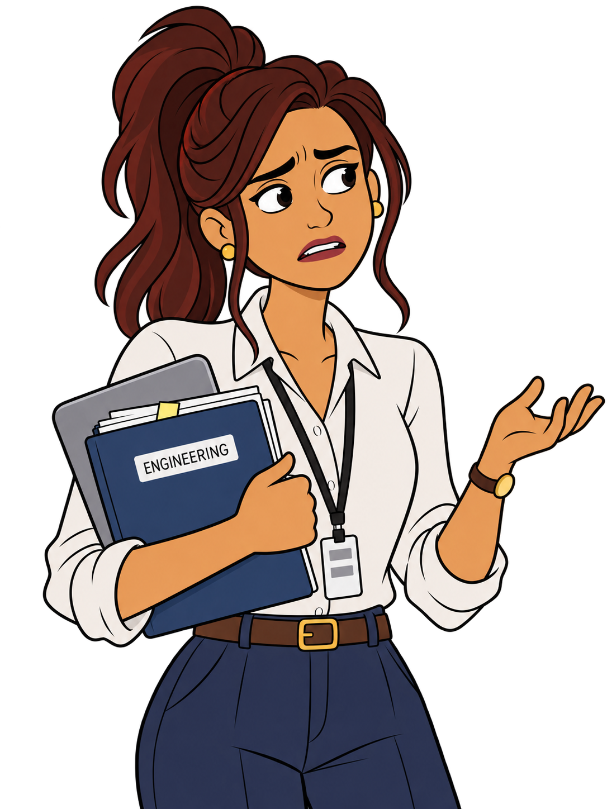
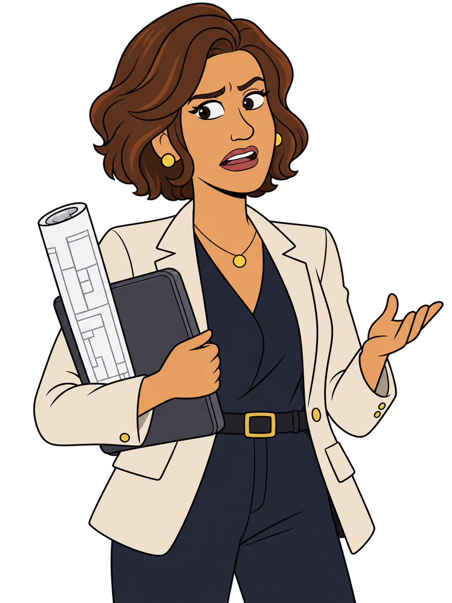
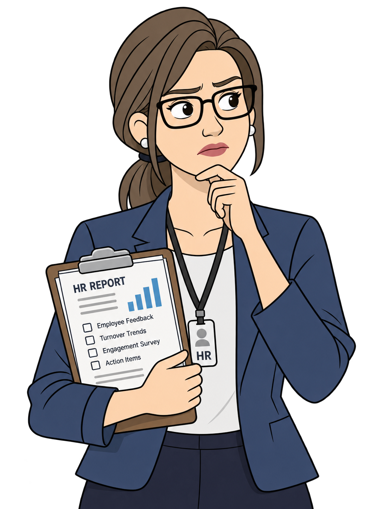
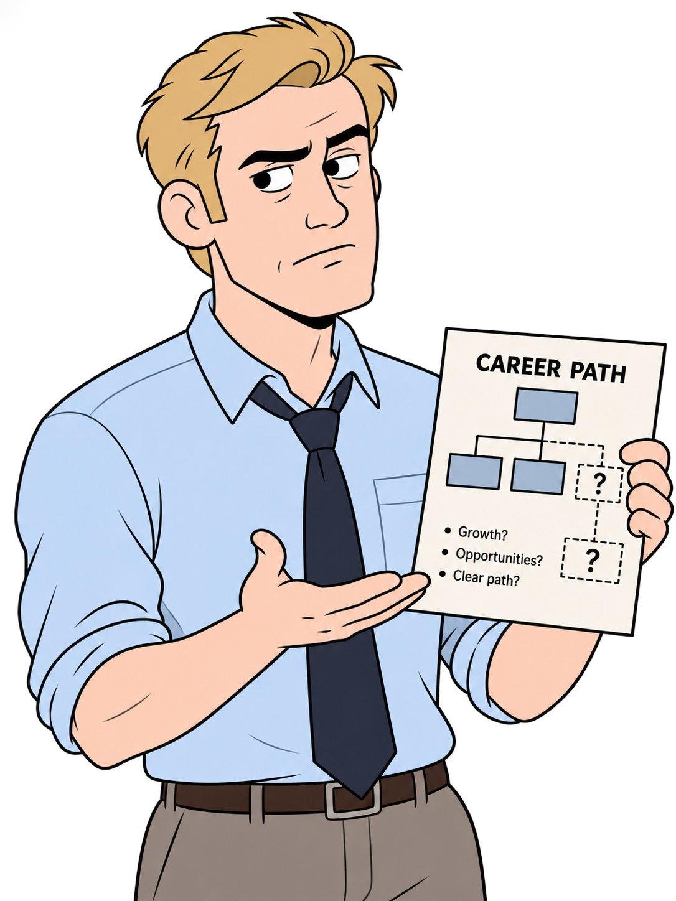
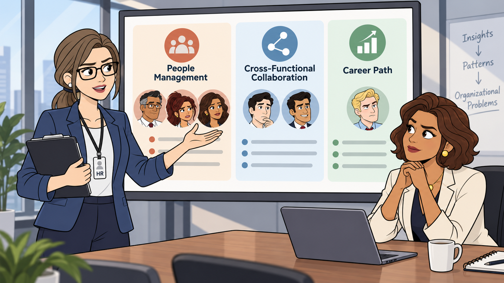
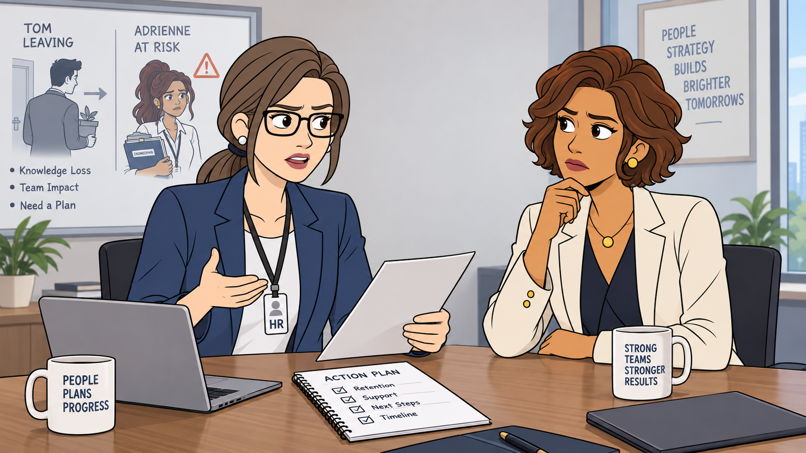
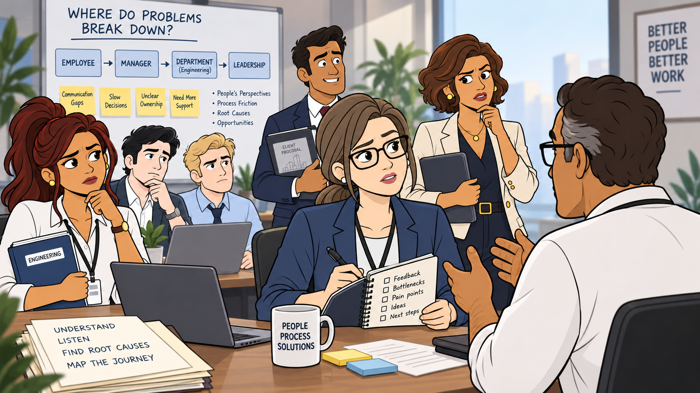
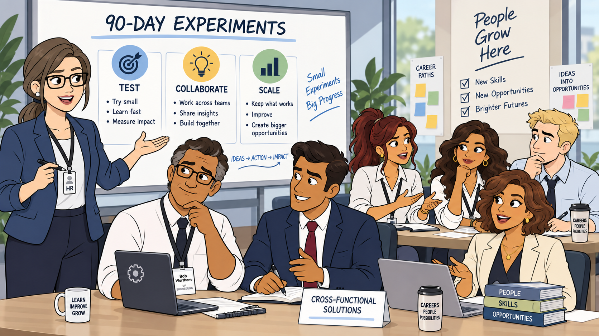
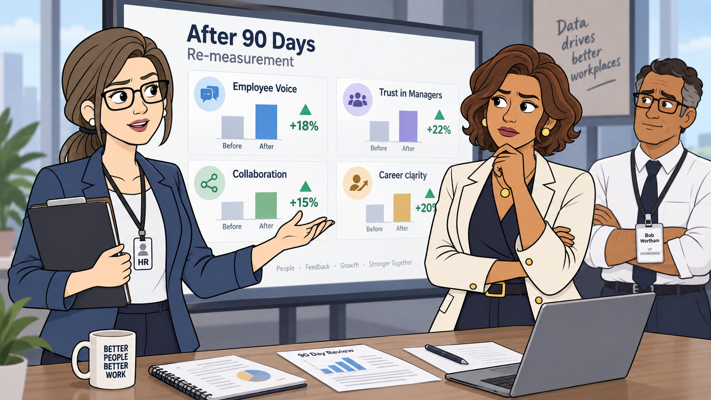
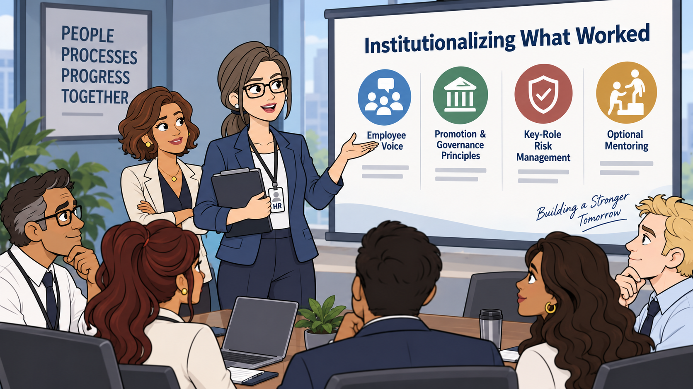

Tom Forsythe의 이직
약 8년간 Sambian에서 근무한 핵심 설계인력. 여러 설계상을 받았고 CEO가 인정하는 고성과자였으며, 상당한 프로젝트 자율성을 누렸다.
J&N의 ‘파트너 직급으로 바로 합류하는 제안’을 받고 떠난다.
성과가 부족해서 떠난 직원이 아니었다.Sambian Partners · Case Investigation
Tom의 퇴사는 개인의 선택이었을까,
아니면 Sambian이라는 조직이 보내고 있던 신호였을까?
00 · OPENING HOOK
01 · WHAT HAPPENED?
퇴사 자체보다, 퇴사 전후에 조직이 보여준 반응을 따라간다.
약 8년간 Sambian에서 근무한 핵심 설계인력. 여러 설계상을 받았고 CEO가 인정하는 고성과자였으며, 상당한 프로젝트 자율성을 누렸다.
J&N의 ‘파트너 직급으로 바로 합류하는 제안’을 받고 떠난다.
성과가 부족해서 떠난 직원이 아니었다.
Tom의 퇴사 이후 Engineering 핵심인재 Adrienne 역시 이직할 수 있다는 이야기가 나온다.
Tom을 멘토에 가장 가까운 사람으로 여겼고, 그가 떠난 뒤 “조금 길을 잃은 느낌”을 표현한다.

처음에는 “우리 조직에 무슨 문제가 있는가?”를 묻지만, 곧 “J&N이 우리 사람을 빼가는 것 아닌가?”라는 방향으로 반응한다.
문제 정의가 내부 원인 탐색에서 외부 위협 대응으로 이동한다.
02 · ORGANIZATIONAL GROWTH
초기 성공을 만든 방식과, 성장한 조직을 운영하는 체계는 같지 않다.
02 · 조직 수준의 원인→03-1 · 그 원인이 Tom 개인에게 나타난 결과
03 · 조직행위 분석
Tom의 퇴사를 하나의 원인으로 설명하기보다, 먼저 Sambian에서 실제로 어떤 문제가 반복되고 있었는지를 본다.
초기에는 빠르게 성장하지만, 고성과자가 일정 단계에 도달한 뒤 다음 역할과 성장방향이 명확하지 않다.
문제를 제기해도 경청 → 후속조치 → 결과 공유로 이어지는 과정이 약하다.
설계–엔지니어링–영업이 프로젝트 초기부터 같은 목표와 고객가치를 조율하는 구조가 약하다.
업무성과는 알지만 상태·경력목표·불만·이탈 신호까지 충분히 파악하고 대응하지 못한다.
먼저, Tom의 이탈을 개인–조직 적합성의 변화로 해석해본다. →
03-1 · 분석 관점 ①
개인–조직 적합성(P–O Fit)초기 Sambian과 높은 적합성
성장하면서 중요하게 느끼는 요소도 변화
문제는 Tom이 변했다는 사실 자체가 아니라, 조직이 성장한 인재의 변화된 기대를 충분히 따라가지 못했다는 데 있다.
그런데 문제를 느낀 직원들은 그 생각을 조직 안에서 제대로 전달할 수 있었을까? →
03-2 · 분석 관점 ②
직원 의견제시(Employee Voice)실제 조직문제 · 직원 의견이 행동으로 이어지지 않는 구조
Adrienne“윗선에 이야기했지만
아무도 듣지 않는다고 느낌”
의견을 낼 수 있는 것과
의견이 실제 변화로 이어지는 것은 다르다.
Tom“퇴사 면담에서도
속내를 충분히 말하지 않음”
문제를 말하는 것만 어려웠던 것이 아니다. 좋은 아이디어를 실제 성과로 연결하는 과정도 끊겨 있었다. ↓
Nokia의 스마트폰 전환기를 분석한 연구에서는 부정적 정보가 상향 전달되는 과정에서 왜곡되면서 경영진의 현실 인식에도 문제가 생긴 것으로 분석되었다.
다음은 좋은 아이디어가 성과로 전환되는 과정이다. →
03-3 · 03
부서 간 협업Savannah설계와 가격 자체는 문제가 아니었다고 봄
Adrienne좋은 아이디어가 결과로 이어지도록 돕는 지원구조가 약하다고 느낌
Paul 한 사람의 발표능력 문제가 아니라, 부서들이 프로젝트 초기부터 같은 고객가치를 정의하는 구조가 부족했다.
좋은 아이디어를 만드는 것과 좋은 아이디어를 조직적으로 실현하는 것은 다르다.
성과가 좋더라도, 그 다음 경력이 보이지 않는다면 직원은 왜 계속 남아 있어야 할까? →
03-4 · 04
경력 병목빠른 책임 부여
많은 프로젝트 경험
빠른 성장
앞의 네 가지와는 다른, 사후 대응의 위험이 하나 더 있다. ↓
03-5 · 추가 위험
사후 대응의 부작용절차적 공정성떠날 것 같은 사람이
더 빨리 승진한다면?
Adrienne 이탈 가능성
↓Helen의 즉시 승진 제안기존 직원
↓정상적인 승진 절차 대기“이탈 가능성이 있는 사람이 더 빠르게 보상받는다는 인식이 생긴다면?”
Mary 관점충성하며 남아 있던 사람에게 오히려 불리한 제도가 될 수 있다.
잘못된 대응은 기존 문제를 해결하기보다 새로운 신뢰 문제를 만들 수 있다.
그렇다면 이 문제를 조직 안의 사람들은 각각 어떻게 경험하고 있었을까? →
04 · PEOPLE
인물 탭을 눌러 각자가 보았던 조직의 단면을 확인한다.
04 · SYNTHESIS


좋은 사람이 부족했던 것이 아니라,
좋은 사람들의 역량·의견·성장을 연결하는 조직체계가 부족했다.
05 · ACTION PLAN
성과 관리에서 구성원의 상태와 성장까지 책임지는 역할로 전환한다.
말할 수 있는 환경을 넘어, 실제 변화와 신뢰로 연결한다.
설계·Engineering·영업이 고객가치와 실현 가능성을 함께 조율한다.
관리직·프로젝트 리더·전문가 경로에 실질적 권한과 보상을 부여한다.
05 · FROM MONDAY MORNING
조사 결과를 기다리는 HR에서, 사람 속으로 들어가 문제를 진단하고
조직의 행동을 끌어내는 HR로.
문제 징후 발견 → 설문조사 → 추가 정보 대기
사람을 직접 만남 → 단절 지점 추적 → 조직문제로 연결 → 변화안 제안 → 재확인

“정보가 부족하므로 기다리는 것이 아니라, 정보가 부족하기 때문에 사람 사이로 들어간다.”
전략적 HR의 역할은 모든 문제를 직접 해결하는 것이 아니라, 조직이 문제를 제대로 보고 필요한 사람이 행동하도록 만들고 실제로 변화했는지 확인하는 것이다.
05 · MARY'S ACTION · 01
Mary → Helen

05 · MARY'S ACTION · 02

05 · MARY'S ACTION · 03
05 · MARY'S ACTION · 04

격주 핵심인재 1:1 · 중요 이슈 후속조치 · 경력대화 · 경청과 조율
설계·Engineering·영업이 처음부터 참여하고 고객가치를 공동 기준으로 삼는다.
관리자 외 프로젝트 리더·전문가 경로와 역할·권한·영향력을 구체화한다.
90-DAY EXPERIMENT · A
정보가 순차적으로 넘어가고, 중요한 맥락은 중간에서 끊긴다.
90-DAY EXPERIMENT · B
직책 이름뿐 아니라 보상·권한·프로젝트 범위·조직 영향력을 함께 설계한다.
사람과 조직을 이끄는 경로
대형 과업과 고객가치를 이끄는 경로
전문성 자체가 고위 경력이 되는 경로
‘또 다른 Tom 한 명’을 찾지 않는다. 설계 전문성·프로젝트 리더십·고객관계·비공식 멘토링·조직 영향력을 여러 사람과 조직체계로 분산한다.
의무 배정이 아니라 자원한 멘토 풀에서 mentee가 선택한다. 기본은 관리자의 사람관리 리더십이다.
05 · MARY'S ACTION · 05

05 · MARY'S ACTION · 06

06 · BEFORE / AFTER
07 · KEY LEARNINGS
혁신을 실제 행동과 성과로 연결하는 조직체계가 없다면 가치는 구호에 머문다.
초기 경력과 8년 뒤 고성과자가 중요하게 느끼는 보상은 달라질 수 있다.
경청·조치·결과 공유까지 이어져야 의견을 내면 변화가 일어난다는 인식이 생긴다.
회사가 왜 그 사람을 필요로 하는지뿐 아니라, 그 사람이 왜 이 회사에 남고 싶은지도 알아야 한다.
한 사람의 퇴사로 시작한 사건이 경력·리더십·협업·직원 의견의 문제로 이어졌다.
08 · AI USE & CRITICAL REVIEW
“완성된 답을 생성하는 도구보다, 사례를 함께 검토하고 논리를 점검하는 분석 파트너로 활용했다.”
Tom, Helen, Mary, Adrienne, Bob 등 각 인물의 행동과 감정선을 하나씩 검토했다.
사례에 직접 나오지 않은 내용을 확정적으로 해석하면, 사실과 추론을 다시 구분했다.
인물의 문제가 섞이거나 하나의 원인으로 단순화된 부분을 다시 질문하며 수정했다.
누가 · 누구를 · 어떻게 만나고 · 첫마디를 무엇이라 하며 · 이후 무엇을 확인할지까지 설계했다.
AI의 첫 답변을 최종 답으로 사용하지 않고, 질문–검토–수정 과정을 반복했다.
실제 피드백“Tom 질문에 왜 Adrienne 내용이 들어간 것 같지?”
Tom의 퇴사 원인에 Adrienne의 멘토·직원 의견 문제가 섞이자 인물별 논리를 다시 분리했다.
Marko 경험 → 내재적 동기 → 조직체계의 한계 → 개인–조직 적합성 변화 → 불명확한 성장경로
직원 의견제시 실패 → 비공식적 멘토 상실 → Bob과의 리더십 관계 → 방향성 상실
실제 피드백“SECTION 5는 이미 문제 분석은 된 것 같은데 억지로 흐름을 늘리는 감이 있어. 그냥 빼도 되지 않을까?”
AI가 해결방안 전에 A/B/C/D 대안을 다시 비교했지만, 앞선 분석에서 원인이 충분히 도출되어 있어 중복으로 판단했다.
실제 요청“어떻게 만나자고 할 건지, 첫 마디를 어떻게 할지 구체적일수록 좋은 솔루션으로 짜고 싶다.”
AI 초기 방향 리더십 교육 · 직원 설문 · 부서 간 협업 강화 같은 일반적 해결책
“누굴 붙잡을지보다, 왜 사람들의 생각을 늦게 알아차리는지부터 봅시다.”
“개인의 잘잘못보다 팀의 목소리가 어디에서 막히는지 확인하려는 대화입니다.”
사례 독해 보조 · 인물 관점 브레인스토밍 · 조직행위 개념 연결 · 해결방안 아이디어 · 발표구조 시각화
Tom 문제의 단순화 · Bob에 대한 빠른 결론 · 공식 mentor 강제배정 · 불필요한 비교 section · 인물 분석 혼합
원문 근거 · 사실과 추론 구분 · 인물별 관점 구분 · 조직행위 개념과의 연결 · 실제 실행 가능성
CROSS-CHECKGemini 3.1 Pro를 활용하여 상호 피드백을 확인했다.